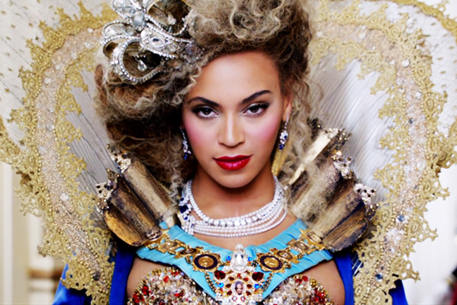
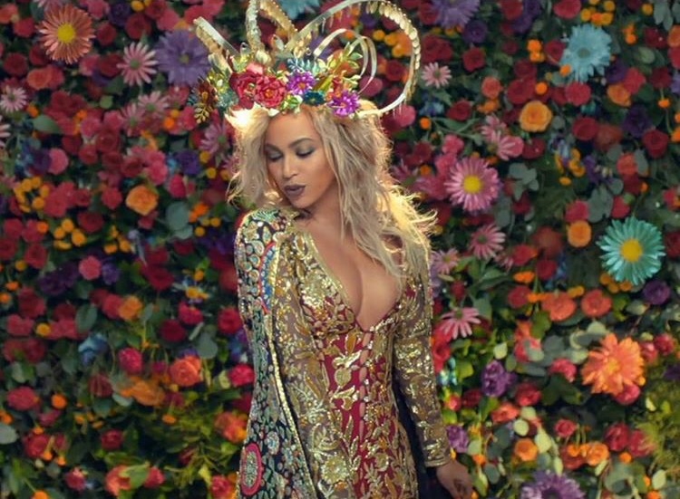
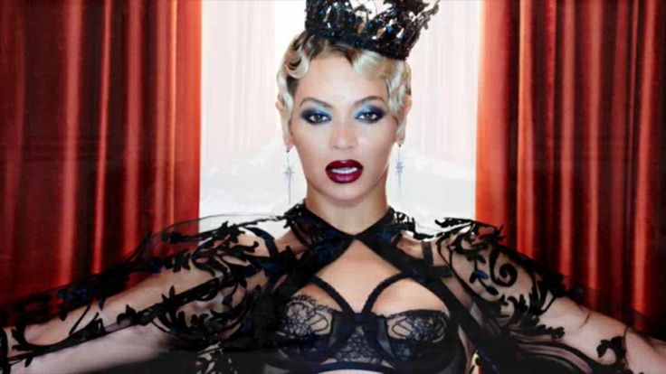
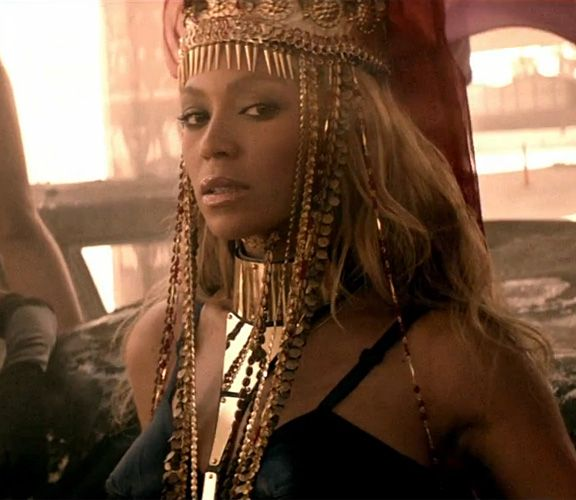

The Queen
Nothing else ever seems to hurt like the smile on your face. I am not broken, I'm not crying, I'm not crying. I got a hot sauce in my bag *swag*. I don't wanna lose my pride, but I'm a fuck me up a bitch. I'm telling these tears, 'Gonna fall away, fall away.'
Hold up, they don't love you like I love you. Slow down, they don't love you like I love you. Mad cause I'm so fresh...fresher than you. Of course sometimes shit go down when it's a billion dollars on an elevator. You wake up, flawless.
It's time to listen, it's time to fight. Each day I feel so blessed to be looking at you. My daddy warned me about men like you. You ain't married to no average bitch, boy. But every diamond has imperfections, but my love's too pure to watch it chip away.
We woke up in the kitchen saying, 'How the hell did this shit happen?' I thought the world would revolve, without us. Then I fill the tub up halfway then ride it with my surfboard. I dream it, I work hard, I grind 'til I own it. Legs movin' side to side, smack it in the air.
I had my ups and downs, but I always find the inner strength to pull myself up. I was served lemons, but I made lemonade. Shoulders sideways, smack it, smack it in the air. May the last one burn into flames. They say true love's the greatest weapon to win the war caused by pain. Tough girl is what I had to be.
Of course sometimes shit go down when it's a billion dollars on an elevator. What's worse, lookin' jealous or crazy...jealous or crazy? You showed me love was all you needed. Goddamn! She murdered everybody and I was her witness. It's time to listen, it's time to fight.
Slow down, they don't love you like I love you. I don't wanna lose my pride, but I'm a fuck me up a bitch. You ain't married to no average bitch, boy. Respect that, bow down bitches. I thought the world would revolve, without us.
I'm telling these tears, 'Gonna fall away, fall away.' Cause when you open your eyes, I feel alive. And just like you I can't be scared and just like you I hope I'm spared. Legs movin' side to side, smack it in the air. You wake up, flawless.
You and me would stop this love drought. I had my ups and downs, but I always find the inner strength to pull myself up. I was served lemons, but I made lemonade. They say true love's the greatest weapon to win the war caused by pain. Each day I feel so blessed to be looking at you. My daddy warned me about men like you.
I am not broken, I'm not crying, I'm not crying. May the last one burn into flames. Always stay gracious, best revenge is your paper. Hold up, they don't love you like I love you. Middle fingers up, put them hands high, wave it in his face, tell 'em 'boy bye!'
Shoulders sideways, smack it, smack it in the air. You wake up, flawless. I'm telling these tears, 'Gonna fall away, fall away.' What's worse, lookin' jealous or crazy...jealous or crazy? I dream it, I work hard, I grind 'til I own it.
Hold up, they don't love you like I love you. We woke up in the kitchen saying, 'How the hell did this shit happen?' You showed me love was all you needed. I am not broken, I'm not crying, I'm not crying. You ain't married to no average bitch, boy.